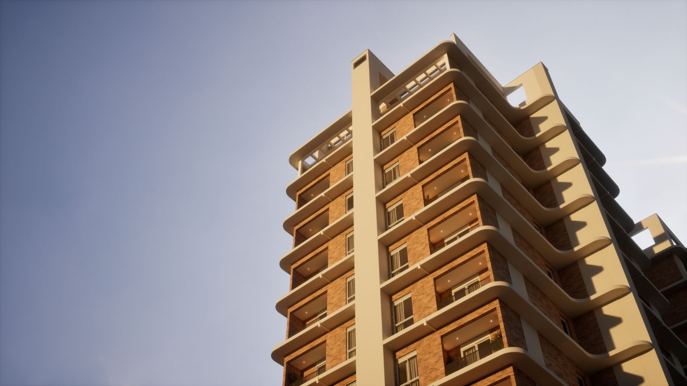
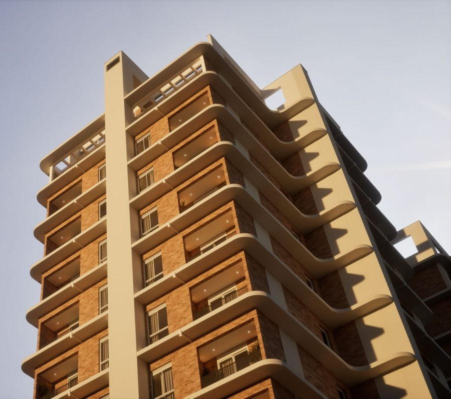

O lugar certo, do jeito certo.
Um edifício residencial desenhado em camadas de luz e sombra. O lançamento está chegando.
Arquitetura que se reconhece de longe.
O Argos Residence nasce de uma ideia simples: cada andar deve ser visto e vivido. As varandas avançam sobre a fachada em linhas contínuas, e o tijolo aparente traz calor a quem chega e a quem mora.

-
Varandas de curvas contínuas
As lajes contornam o edifício sem quinas vivas e desenham o ritmo da fachada. Cada varanda ganha sombra própria nas horas mais quentes.
-
Tijolo aparente
Um material honesto, que envelhece bem e dá textura à luz do sol. O contraste com o concreto claro marca cada pavimento.
-
Um eixo vertical
Uma coluna marcante atravessa a fachada do chão à cobertura e organiza o conjunto, como a lombada de um livro.
Seja o primeiro a saber.
Plantas, localização, valores e condições serão apresentados primeiro a quem estiver na lista de interesse. Deixe seu nome e falamos com você pelo WhatsApp.